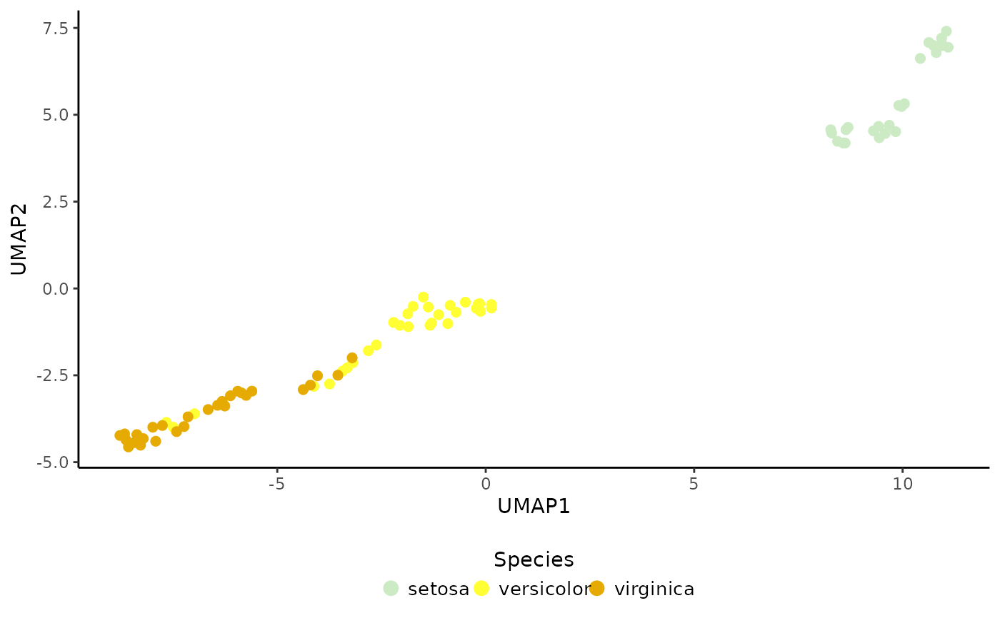
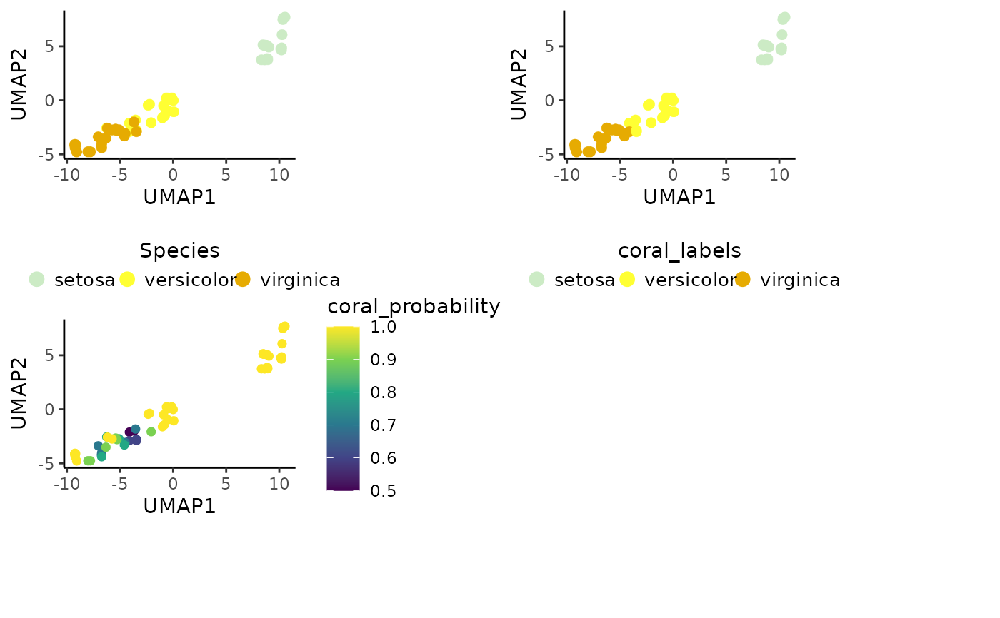

This function allows to project new query data sets onto a reference built with Coralysis as well as transfer cell labels from the reference to queries.
Usage
ReferenceMapping.SingleCellExperiment(
ref,
query,
ref.label,
scale.query.by,
project.umap,
select.icp.models,
k.nn,
dimred.name.prefix
)
# S4 method for class 'SingleCellExperiment,SingleCellExperiment'
ReferenceMapping(
ref,
query,
ref.label,
scale.query.by = NULL,
project.umap = FALSE,
select.icp.models = metadata(ref)$coralysis$pca.params$select.icp.tables,
k.nn = 10,
dimred.name.prefix = ""
)Arguments
- ref
An object of
SingleCellExperimentclass trained with Coralysis and after runningRunPCA(..., return.model = TRUE)function.- query
An object of
SingleCellExperimentclass to project ontoref.- ref.label
A character cell metadata column name from the
refobject to transfer to the queries.- scale.query.by
Should the query data be scaled by
cellor byfeature. By default isNULL, i.e., is not scaled. Scale it if reference was scaled.- project.umap
Project query data onto reference UMAP (logical). By default
FALSE. IfTRUE, therefobject needs to have a UMAP embedding obtained withRunUMAP(..., return.model = TRUE)function.- select.icp.models
Select the reference ICP models to use for query cluster probability prediction. By default
metadata(ref)$coralysis$pca.params$select.icp.tables, i.e., the models selected to compute the reference PCA are selected. IfNULLall are used. Otherwise a numeric vector should be given to select the ICP models of interest.- k.nn
The number of
knearest neighbors to use in the classification KNN algorithm used to transfer labels from the reference to queries (integer). By default10.- dimred.name.prefix
Dimensional reduction name prefix to add to the computed PCA and UMAP. By default nothing is added, i.e.,
dimred.name.prefix = "".
Examples
# Import package
suppressPackageStartupMessages(library("SingleCellExperiment"))
# Create toy SCE data
batches <- c("b1", "b2")
set.seed(239)
batch <- sample(x = batches, size = nrow(iris), replace = TRUE)
sce <- SingleCellExperiment(assays = list(logcounts = t(iris[,1:4])),
colData = DataFrame("Species" = iris$Species,
"Batch" = batch))
colnames(sce) <- paste0("samp", 1:ncol(sce))
# Create reference & query SCE objects
ref <- sce[,sce$Batch=="b1"]
query <- sce[,sce$Batch=="b2"]
# 1) Train the reference
set.seed(123)
ref <- RunParallelDivisiveICP(object = ref, k = 2, L = 25, C = 1,
train.k.nn = 10, train.k.nn.prop = NULL,
use.cluster.seed = FALSE,
build.train.set = FALSE, ari.cutoff = 0.1,
threads = 2)
#> WARNING: Setting 'divisive.method' to 'cluster' as 'batch.label=NULL'.
#> If 'batch.label=NULL', 'divisive.method' can be one of: 'cluster', 'random'.
#>
#> Initializing divisive ICP clustering...
#>
|
| | 0%
|
|=== | 4%
|
|====== | 8%
|
|========= | 12%
|
|============ | 17%
|
|=============== | 21%
|
|================== | 25%
|
|==================== | 29%
|
|======================= | 33%
|
|========================== | 38%
|
|============================= | 42%
|
|================================ | 46%
|
|=================================== | 50%
|
|====================================== | 54%
|
|========================================= | 58%
|
|============================================ | 62%
|
|=============================================== | 67%
|
|================================================== | 71%
|
|==================================================== | 75%
|
|======================================================= | 79%
|
|========================================================== | 83%
|
|============================================================= | 88%
|
|================================================================ | 92%
|
|=================================================================== | 96%
|
|======================================================================| 100%
#>
#> Divisive ICP clustering completed successfully.
#>
#> Predicting cell cluster probabilities using ICP models...
#> Prediction of cell cluster probabilities completed successfully.
#>
#> Multi-level integration completed successfully.
# 2) Compute reference PCA & UMAP
ref <- RunPCA(ref, p = 5, return.model = TRUE, pca.method = "stats")
#> Divisive ICP: selecting ICP tables multiple of 1
set.seed(123)
ref <- RunUMAP(ref, return.model = TRUE)
# Plot
PlotDimRed(object = ref, color.by = "Species", legend.nrow = 1)

# 3) Project & predict query cell labels
map <- ReferenceMapping(ref = ref, query = query, ref.label = "Species",
project.umap = TRUE)
# Confusion matrix: predictions (rows) x ground-truth (cols)
preds_x_truth <- table(map$coral_labels, map$Species)
print(preds_x_truth)
#>
#> setosa versicolor virginica
#> setosa 24 0 0
#> versicolor 0 18 2
#> virginica 0 2 20
# Accuracy score
acc <- sum(diag(preds_x_truth)) / sum(preds_x_truth) * 100
print(paste0("Coralysis accuracy score: ", round(acc), "%"))
#> [1] "Coralysis accuracy score: 94%"
# Visualize: ground-truth, prediction, confidence scores
cowplot::plot_grid(PlotDimRed(object = map, color.by = "Species",
legend.nrow = 1),
PlotDimRed(object = map, color.by = "coral_labels",
legend.nrow = 1),
PlotExpression(object = map, color.by = "coral_probability",
color.scale = "viridis"),
ncol = 2, align = "vh")
